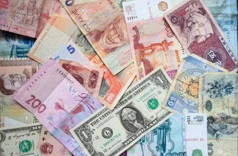

MONEY
Деньги -
всеобщий эквивалент, служащий мерой стоимости любых товаров и услуг
и способный непосредственно на них обмениваться. По своей форме
деньги могут быть
особым товаром, ценной бумагой, знаком стоимости,
различными благами или ценностями,
записями по счетам

Основные функции денег
- Мера стоимости
- Средство обращения
- Средство платежа
- Средство накопления
- Мировые деньги
Также иногда выделяют такую функцию
денег:
Средство формирования
сокровищ.
Если в условиях натуральных денег для сохранения баланса между
денежной и товарной
массами требовалось уменьшить количество денег
в обращении, они начинали
откладываться в виде сокровищ. Сокровища
отличаются от накоплений тем, что
накопления являются формой
аккумуляции средств для конкретной цели; при достижении
необходимого размера или в нужное время они тратятся.
Дополнительная информация:
money.est